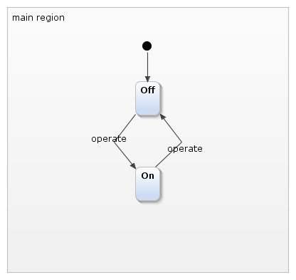

Arduino Traffic Light Example!
A very basic example for the Arduino platform that switches a LED on and off.

The statechart tools are a central part of YAKINDU: the modular toolkit for model-driven development of embedded systems. It is based on the open-source development platform Eclipse. YAKINDU Statechart Tools (YAKINDU SCT) provide the following tools to deal with state machine diagrams:
-
Statechart diagram editor to graphically create and edit statecharts
-
Statechart simulator to simulate the behavior of statecharts
-
Code generators for Java, C, C++ to transform statecharts into code
-
Custom generator projects to easily create model-to-text transformations with Xtend/Java or Xpand
-
Integrated validator to check for syntactical or semantical problems of the statechart model
The following graph shows these features and their relation to each other: